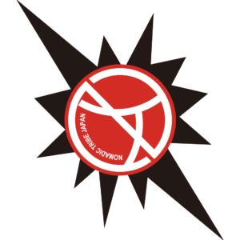

CLUB
クラブ概要
CLUB INTRODUCTION
はじめに

Nomadic Tribe(ノマディックトライブ)は、江戸川区を拠点に活動するアルティメットのクラブチームです。
私たちは世界クラブアルティメット選手権大会（WUCC）優勝を目標に日々活動しています。
トップチームの挑戦と並行し、2024年にはユースチーム「Nomadic Tribe Jr.」を発足させ、次世代の育成にも力を注いでいます。
江戸川区から世界へ。地域の皆様に愛されるチームを目指します。
CLUB HISTORY
クラブ沿革
-
2003年
クラブ創設
-
2006年
WFDF世界アルティメットクラブチーム選手権大会 オーストラリア・パース 8位
-
2010年
WFDF世界アルティメットクラブチーム選手権大会 チェコ・プラハ 25位
-
2014年
WFDF世界アルティメットクラブチーム選手権大会 イタリア・レッコ 11位
- 2017年
- 2018年
- 2022年
- 2024年
- 2025年
MESSAGE
監督挨拶
日頃よりNomadic Tribeへの多大なるご支援、ご声援を賜り、誠にありがとうございます。
私たちの目標は、世界クラブアルティメット選手権大会（WUCC）で頂点に立つことです。その実現に向け、チーム一丸となって日々鍛錬を重ねております。
アルティメットの持つ魅力を最大限にお届けし、応援してくださるすべての方々に夢と感動をお届けすることをお約束します。
目標達成に向け、チーム一丸となって邁進いたしますので、引き続き皆様の変わらぬご支援をよろしくお願い申し上げます。
Nomadic Tribe 監督
大西 弘樹
ACCESS
アクセス
主な練習場所：江戸川河川敷グラウンド
〒133-0051 東京都江戸川区北小岩８丁目
主な練習場所：鬼怒緑地公園サッカー場
〒308-0856 茨城県筑西市伊佐山５７４−１４